Click a highlighted definition to read it here without losing your place. Follow section numbers alongside the original PDF.
Find lecture practice in this chapter (2)
Expand a practice panel for its example, Mermaid flow, and self-check.
Chapter cheat sheet
The main idea: Separate names from mutable contents and pass updated memory through every evaluation step.
| Key term | Concise meaning |
|---|---|
| Location ℓ | The identity of a mutable cell. |
| Store M | Maps locations to their current values. |
| Explicit reference | A location value created and accessed through reference operations. |
| Implicit reference | Variable bindings denote cells; reading a variable reads its cell automatically. |
| Call by value / reference | Value passing allocates a parameter cell; reference passing shares the actual argument’s cell in this model. |
Rule to remember: Stateful evaluation returns (v, M′). In the implicit model, reading x means M(ρ(x)).
Small example: If ρ(x)=ℓ0 and M(ℓ0)=4, assigning x:=7 changes M(ℓ0), while ρ(x) remains ℓ0.
How to solve problems:
- Draw the environment and store separately.
- Evaluate each operand using the memory returned by the previous one.
- Distinguish fresh allocation from updating an existing cell.
- At a call, decide whether the parameter owns a fresh cell or aliases another.
Common trap: Using old memory loses effects. Capturing a location does not freeze the value stored there.
Read the chapter in the original PDF · Continue to the detailed sections
Syntax and code companion
Use the syntax reference to trace a symbol to its meaning and source.
Reference operations and assignment · Locations and memory · Binding: let x = e1 in e2
Line-by-line code · A cell, an alias, and an update
Complete OCaml teaching example; OCaml assignment returns unit
let result =The final expression reads the updated cell.
let r = ref 0 inAllocate L0 containing 0; bind r to that reference.
let alias = r inCopy the reference, not the contents. Both names identify L0.
alias := !alias + 1;Read L0, increment, and update it. The semicolon sequences the next expression.
!rRead the same cell through r.
Trace result: result = 1. OCaml := returns (); toy SETREF/SET and B assignment can return the assigned value.
Before you begin
Read in the PDF: Chapter 6, pp. 161–192. Goal: explain a changing value without confusing a variable name with a memory cell. Definitions: store, call by value, call by reference.
6.1 First Approach
The first model makes references explicit. Environments still map names to values, but a value may now be a location. The store maps locations to current values. Creating a reference allocates a cell; reading it follows the location; assigning it changes the store.
Think in two arrows: name → value in the environment; if that value is a location, location → current contents in memory. A reference is a value that identifies a cell, not the contents of that cell.
6.1.1 Syntactic Structure
Add explicit allocation, dereference, reference assignment, and sequencing. The implementation constructors are NEWREF, DEREF, SETREF, and SEQ. A variable lookup does not automatically dereference a location value in this model.
6.1.2 Semantic Structure
Evaluation now has the contract eval : exp -> env -> mem -> value * mem. Every premise receives the store produced by the preceding premise. Even an arithmetic expression can change memory when its operands call stateful procedures.

View Mermaid source
flowchart TD
accTitle: Chapter 6 - explicit reference assignment threads memory
accDescr: Evaluate the location expression, then the new value with the updated memory, then update that cell.
A["SETREF e1 e2 with memory m0"] --> B["Evaluate e1 to location l and memory m1"]
B --> C["Evaluate e2 using m1 to value v and memory m2"]
C --> D["Update l to v in m2"]
D --> E["Return v and the new memory"]
Worked trace: a counter starts at 0; f increments it and returns its new contents. In f 0 + f 0, the first call returns 1 and passes the changed store to the second call, which returns 2. The sum is 3. Reusing the original store for both operands would produce the wrong result.
6.2 Second Approach
The second model makes variable storage implicit. The environment maps each variable to a location, and lookup reads that location's value from memory. A let binding allocates a fresh variable cell. Assignment changes that cell without changing the environment mapping.
Compare the two models before continuing:
| Question | Explicit references | Implicit references |
|---|---|---|
| What does an ordinary variable denote? | A value, which may be a location | A location whose contents are read automatically |
| What does ordinary let do? | Bind the evaluated value | Allocate a variable cell and bind its location |
| How is a cell read? | An explicit dereference operation | Ordinary variable access follows both maps |
| What changes during assignment? | Contents at the target reference | Contents at the variable’s location |
In both models, the store records mutation. Neither model permits discarding an operand’s updated memory.
6.2.1 Syntactic Structure
The important change is variable assignment, represented by SET(x,e), plus a call-by-reference form. Explicit dereferencing is no longer required for ordinary variable access. Chapter 7 later adds first-class pointers to this model.
6.2.2 Semantic Structure
Keep the two maps separate: ρ(x) = l and σ(l) = v. Evaluating VAR x follows both. For LET(x,a,b), evaluate a, allocate a fresh location for its value, extend the environment with that location, then evaluate b using the updated memory. A closure saves an environment of locations, while each call uses the current store, so changes to captured cells remain visible.
6.2.3 Function Call Method
Call by value allocates a fresh parameter cell initialized with the argument's value. Call by reference binds the parameter directly to the caller variable's existing location. Both evaluate the body using the closure's definition environment extended appropriately.

View Mermaid source
flowchart TD
accTitle: Chapter 6 - parameter passing is a choice about locations
accDescr: Value calls allocate a new cell; reference calls reuse the caller's cell, making assignment visible to the caller.
A["Caller a is stored at location L1"] --> B{"Call method"}
B -->|Value| C["Read a; allocate fresh parameter cell L2"]
B -->|Reference| D["Parameter also points to L1"]
C --> E["Assign parameter: only L2 changes"]
D --> F["Assign parameter: caller's L1 changes"]
Worked result: start with a = 1 and let f set its parameter to 9. After a value call, a remains 1. After a reference call, a becomes 9. Copying a record value can still share its field locations; “call by value” does not imply recursively copying every reachable cell.
Distinguish aliasing from delayed evaluation Lecture 8
- Call by value uses a fresh parameter cell; call by reference aliases a caller cell.
- Lazy evaluation delays argument computation; it is distinct from passing a location.
Source slides: p. 9 · p. 14 · p. 16 · p. 20 · p. 25 · p. 26 · p. 33 · p. 37 · p. 38
Practice with Lecture 8 · example, thinking flow, and self-check
Rule in context: ρ : Var → Loc, M : Loc → Value; variable value = M(ρ(x)); eval returns (v, M′)
Locations and memory · Runtime evaluation judgment · Reference operations and assignment · Lookup and map extension
Worked example: If a is stored at L0 with value 3, passing a by reference to a procedure that assigns 4 changes L0. Passing by value creates a different parameter cell and leaves a at 3.
Thinking steps:
- Identify explicit or implicit references.
- Find or allocate the location.
- Evaluate operands while threading memory.
- Update or read the selected cell.
- Return value and final memory.

View Mermaid source
%%{init: {"flowchart": {"wrappingWidth": 600}}}%%
flowchart TD
accTitle: Lecture 8 reasoning route
accDescr: Numbered stages for applying state and parameter passing.
N0["1. Identify explicit or implicit references"]
N1["2. Find or allocate the location"]
N0 --> N1
N2["3. Evaluate operands while threading memory"]
N1 --> N2
N3["4. Update or read the selected cell"]
N2 --> N3
N4["5. Return value and final memory"]
N3 --> N4
Homework connection: HW3 variables, assignment, SEQ, CALLV, CALLR, and loops; textbook Chapter 6.
HW3 thinking guide · Full homework map
Try it: Can the right operand start with the original memory?
Reveal the explanation
No. It must receive the memory produced by the left operand when the specified order is left to right.
6.3 Implementation
Read in the PDF: pp. 188–192. Tasks: implement both explicit-reference and implicit-reference interpreters.
Download the complete state solutions. Run ocaml textbook_state.ml. The engine makes the two modes explicit: run Explicit expression and run Implicit expression. Environment bindings are tagged as values or addresses, and memory is an immutable finite map with a fresh-location counter. Chapter 7 reuses this engine.
Solution A — Explicit references
Ordinary let and argument binding install values. NEWREF evaluates its initializer and allocates; DEREF checks for a location and reads it; SETREF evaluates the target before the right-hand side and updates the returned store. Assignment returns the assigned value, following the book's rules.
Solution B — Implicit references
Let and value calls allocate cells. VAR reads through the binding's address. SET changes the existing address. CALLREF resolves its variable argument in the caller, then aliases that location in the callee. Recursive procedure binding first reserves a cell and then stores a closure whose captured environment includes that cell; this supports self-reference without rebuilding the whole environment.
Checks included: counter ordering, both parameter modes, recursion, pointers and record sharing for the next chapter. The counter is part of each store, so separate runs begin independently and collection does not reuse an old address accidentally.
Homework connection: HW3 depends on these distinctions, while using its own AST. Next: Chapter 7.
Lecture extension: Exceptions and continuations
This slide topic extends the chapter’s model; it is not a numbered section of the supplied textbook. Make pending computation explicit so a raised exception can discard frames up to the nearest handler.
Exceptions and continuations Lecture 10
- A continuation represents the computation that remains after the current expression.
- The handler runs outside the handled continuation segment; discarded arithmetic does not resume.
Source slides: p. 7 · p. 9 · p. 10 · p. 11 · p. 18 · p. 19 · p. 20 · p. 21
Practice with Lecture 10 · example, thinking flow, and self-check
Rule in context: try (1 + raise 5) catch x x ⇒ 5; the waiting addition frame is discarded
Continuation and exception frames · Runtime evaluation judgment
Worked example: try (5 + raise 9) catch x (x + 2) returns 11, not 16. An unhandled raise has no matching handler and cannot produce an ordinary result.
Thinking steps:
- Push frames for pending work.
- Install a handler frame for try.
- Evaluate the raised payload.
- Discard frames to the nearest handler.
- Run the handler in its saved environment.

View Mermaid source
%%{init: {"flowchart": {"wrappingWidth": 600}}}%%
flowchart TD
accTitle: Lecture 10 reasoning route
accDescr: Numbered stages for applying exceptions and continuations.
N0["1. Push frames for pending work"]
N1["2. Install a handler frame for try"]
N0 --> N1
N2["3. Evaluate the raised payload"]
N1 --> N2
N3["4. Discard frames to the nearest handler"]
N2 --> N3
N4["5. Run the handler in its saved environment"]
N3 --> N4
Homework connection: An extension of the HW2 interpreter model; exceptions are not required constructors in that starter. Use the companion exception trace for practice.
HW2 thinking guide · Full homework map
Try it: Does the handler resume the abandoned addition?
Reveal the explanation
No. The continuation frames above the handler have been removed.